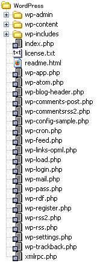
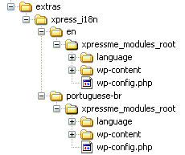

Notes
- XpressME Integration Kit doesn’t function only by it as XOOPS module.
- Being able to integrate by this is WordPress version 2.7 or more.
Download of necessary file
- Download of XPressME Integration Kit
XPressME Integration Kit is downloaded on the download page.
The composition of the downloaded file is as follows.

- Download of WordPress
WordPress is downloaded from WordPress.orgThe composition of the downloaded file is as follows for WordPress2.7.

Making XPressME module for XOOPS
- The work directory is made. The directory name is made the module name such as ‘xpress’.
- The file of XPressME Integration Kit is copied onto the work directory of step 1.
- The file of WordPress is copied onto the work directory of step 1.

Localaize
If the language & wp-config.php file that you need exists in the extras/xpress_i18n folder
The file and the folder in extras/xpress_i18n/test/xpressme_modules_root are overwrited to the route of the module.
wp-config.php file
language folder
wp-content folder

Installation of XpressME module
The made module is used.
- Up-loads it in the directory 'XOOPS_ROOT_PATH/modules/' as well as other modules.
- The permission of /templates directory and the /wp-contents directory of the XPressME module is changed to 777.
- The module is installed on the XOOPS admin page.
Others
The module name (directory name) can give an arbitrary name as long as it doesn't overlap with other modules of XOOPS.
Two or more XPressME modules can be installed by changing the module name. (However, it is not D3 module. )